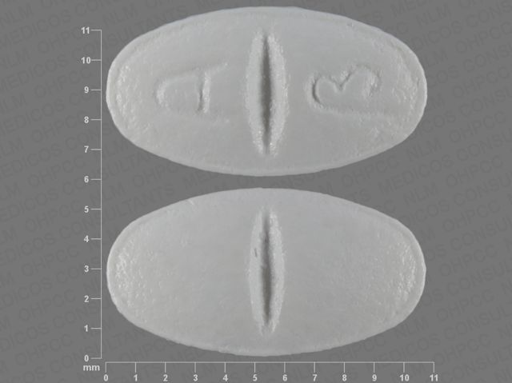
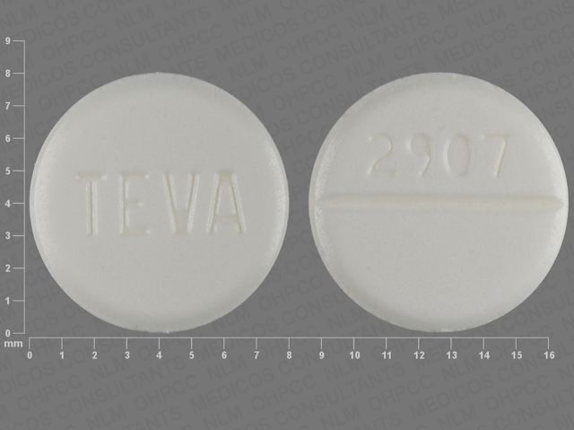

For GP and heart-failure practices
MedGuard listens to the visit and checks her medicines, blood tests and the official leaflets. When it isn’t sure, it asks. The doctor decides.
Built on Exasol · only the doctor sees the screen
“I take the white one with my coffee.”


“Is it round, or oval with a line?”
Sources: her prescription · pill database · official leaflets
1
To the conversation between doctor and patient, including “the red one” and “the white one”.
2
Prescription, pharmacy, blood tests and official leaflets, joined in Exasol.
3
When it isn’t sure, it suggests a question. The doctor decides and signs.